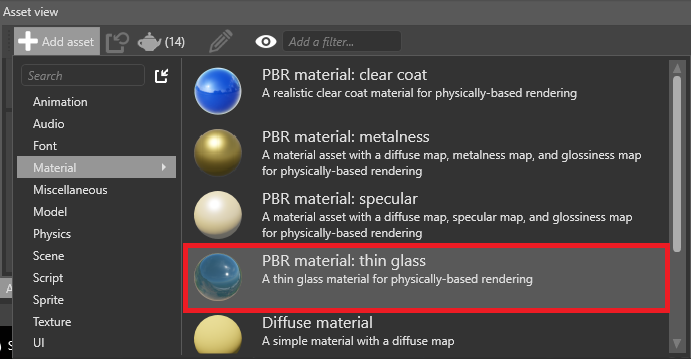
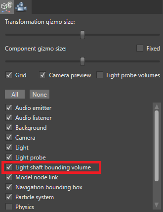
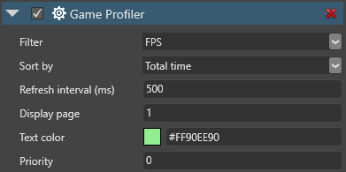

Xenko 2.1 release notes
12 September 2017
Highlights
Local reflections
Xenko 2.1 introduces local reflections. When you enable this post effect, the scene is reflected in glossy materials.

You can enable and customize local reflections in the graphics compositor on the post effects properties.

For details, see Local reflections.
Clear coat shading
Xenko 2.1 includes a clear-coat material template that uses physically-based rendering to simulate vehicle paint.

Clear-coat shading has several advantages over creating the effect manually with material layers:
- layers are blended based on distance
- increased performance
- improved visualization
You can add a predefined clear coat material from the Asset view under Add asset > Material.

For details, see Clear coat shading.
Thin glass materials
You can now render thin glass materials such as windshields. The diffuse color controls the tint of the glass and how much light is blocked (darker colors block more light).
You can add a predefined Glass material from the Asset view under Add asset > Material.

Improved light shafts
You can now use light shafts with any kind of light that casts shadows (ie point lights, directional lights, or spot lights). You can also use them with multiple shadow cascades.
Additionally, Game Studio now displays light shaft bounding volumes in the scene editor, so you can easily see the areas where light shafts are created. To show or hide navigation light shaft bounding volumes, in the scene editor toolbar, open the gizmo options menu and use the Light shaft bounding volumes checkbox.

The LightShaftComponent settings have been simplified and now have settings to control quality and performance.
For details, see Light shafts.
Texture streaming
Xenko now supports streaming for textures. This significantly decreases the time it takes to load a game or scene, uses less memory, and makes your game easier to scale.
Streaming is enabled for textures by default. You can find the option in the texture properties under Format.

You can also set the global Streaming settings in Game settings.
For details, see Streaming.
Render masks
You can now set which render groups a camera renders under Graphics Compositor > Entry points > Render masks. For example, you can have a model be visible to Camera A but invisible to Camera B.

For details, see Render groups and masks.
Improved profiler
The Game Profiler script now displays more information and is easier to use.

You can now:
profile GPU information
switch between CPU, GPU, and FPS-only results with F1
sort the result pages by Name or Time with F2
change how frequently the profiler gets and displays new results with - / +
jump to a results page with the number keys, or move forward and backwards with F3 and F4
set parameters in Game Studio:

For details, see Profiling.
Debug text
You can now display debug text at runtime. For more information, see Debug text.

Rewritten input system
The input system has been rewritten to track different input devices and allow for better extensibility.
- Allows detection of added/removed devices through events on the InputManager
- New device interfaces such as
IMouseDevice,IKeyboardDevice,IGameController - High-level
IGamePadDevicereplaces the gamepad functionality, with support for XInput - Lower-level
IGameControllerDeviceallows access to numbered buttons/axes - Automatic detection of plugged-in/removed controllers
- Support for different keyboard layouts and IME for text input
- Access to resolution and absolute coordinates for mouse/pointer devices
KeyEventnow has aRepeatCountmember, indicating how many times the key has been repeated while being held down
For details, see Input.
Improved Direct3D 12 support
To support graphics functionalities on every platform, we've implemented missing features for the DirectX 12 rendering backend:
- compute and tessellation shaders
- unordered access views for textures and buffers
- structured buffers
For more details, see the Changelog below.
Improved environment fresnel
Fresnel describes how light is reflected depending on the angle the material is viewed from. Typically, high angles are more reflective.
Previously, Xenko used an imprecise polynomial approximation to compute the fresnel for environment lighting (such as cubemaps), resulting in a bigger-than-expected white outline. Xenko now defaults to a precomputed BRDF environment lookup texture that matches our default lighting equations (GGX Schlick). This produces much more accurate rendering.
Japanese documentation
The documentation is now available in Japanese. To switch languages, use the Language button in the top-right of the documentation site.
Breaking changes
Input system
- Renamed
PointerStatetoPointerEventType - Changed the members of
PointerEventType:Downhas been renamed toPressedMovehas been renamed toMovedUphas been renamed toReleasedCancelhas been renamed toCanceledOuthas been removed; useCanceledinstead
- Renamed
InputManager.ActivatedGesturestoInputManager.Gestures - Changed checking support for sensors using
Sensor.IsSupportedtoInputManager.Sensor != null(whereSensoris the name of the sensor you're checking) - The
HasDown/Pressed/ReleasedMouseButtons()functions on theInputManagerare now properties - Removed
GetGamePad(); useIGamePadDevice.Stateto acquire a gamepad stateTo obtain a gamepad, use
InputManager.GamePads,InputManager.GetGamePadByIndex(index)or use theInputManager.DeviceAdded/Removedevents - Removed
GamePadState.IsConnected; use theInputManager.DeviceAdded/Removedevents or check the value returned byInputManager.GetGamePadByIndex(index) != null - Moved
IsPadButtonDown/Pressed/Released()to theIGamePadDeviceasIGamePadDevice.IsButtonDown/Pressed/Released() - Moved the
SetGamePadVibration()function to theIGamePadDevice - Locking the mouse with
InputManager.LockMousePosition()no longer automatically hides the cursor; useIGame.IsMouseVisiblefor this - Removed
PointerEvent.PointerType; usePointerEvent.Device is IMouseDeviceto check if the event came from a mouse - Removed
PointerEvent.IsPrimary - Renamed
PointerIdonPointerEventtoId - Renamed
StateonPointerEventtoEventTypeand its type toPointerEventType - Removed
KeyEvent.Type; to check if this was a pressed or released event, use the booleanKeyEvent.IsDown MouseWheelDeltais now-1or1per scroll unit instead of-120or120- Removed
MultiTouchEnabledon theInputManager; multi-touch is always enabled
Light shafts
- Removed
ExtinctionFactorandExtinctionRatioto simplify the light shaft component
Engine
- Renamed
DebugConsoleSystemtoDebugTextSystem - Now default
RenderStageSelectorselect all entity groups
Known issues
- On Linux, when switching the underlying graphics platform, rendering doesn't occur or fail. To fix the problem, delete the cache, local, and roaming folders on the Linux host and restart the game
-
- On iOS, if
Enable device-specific buildsis on (set in the project properties), it's not possible to debug game code. To speed up development, manually select the architecture of your device from the Advanced tab
- On iOS, if
- Performance issues on mobile (being worked on)
- Live scripting has been temporarily disabled
Changelog
Version 2.1.0.3 - 12 September 2017
Enhancements
General
- Updated the list of third-party libraries and sorted by editor and runtime dependencies
Game Studio
- Reviewed and rewritten editor text (menus, button labels, tooltips and so on)
- Removed redundant dialog boxes
- Improved directional light gizmo visuals
- Improved translation gizmo design. Translation planes now always face the camera
- Reduced graphical glitches and optimized navigation mesh overlay rendering
- Removed special character restriction on string keys for dictionaries
- Changed the default color of the clear frame for better prefab editing
- Added a mark for the origin in the scene and prefab editor
- Added wireframe bounding volume for light shafts
- Added a context menu entry in the asset view to copy an asset's URL
- Allowed mixed document orientation in the dock panel
Assets
- Updated to latest version of DirectXTex
- Improved the computation of dependencies between assets leading to faster build and thumbnails generation
- Changed how root parts of hierarchical assets (prefab, scene, UI) are referenced and serialized (direct references instead of Guids)
Engine
- Added render group mask on the
SceneCameraRendererto cull entities per camera - Improved the game profiler (reduced performance impact, improved UX & visual, etc)
- Added a profiling key to the script component for user script profiling
- Added streaming support for textures.
- Added support for GPU queries.
Graphics
- FXAA Quality was crashing in many cases, because the value doesn't work with all numbers between 10 and 39. It's now exposed as two controls: a
Ditheringcombobox and aQualityslider - Improved MSAA depth buffer resolving
- Minor shader fixes
- Added option for random texture sampling to texture maps
- Enabled shadow casting for transparent materials
- Added
IsAlphaCutoffoption in sprite component - Added swap function to
Textureto swap the content of two textures
Direct3D 12
- Command List implementations for Dispatch, ClearReadWrite, Copy, CopyMultisample, CopyCount
- Resource state transitions fixes
- Resource barriers batching
- Added proper ClearValue setup for render targets and depth stencil buffers
- Added DX12 Debug Layer filter for irrelevant warnings
- Added support for:
- compute pipeline support
- tessellation
- compute, hull, domain and geometry shaders
- unordered access views for textures and buffers
- structured buffers
- staging textures and buffers
Input
- Added
AbsoluteMousePositioninformation to theInputManger. - Improved gamepad support (new devices supported, improved API, runtime detection, etc.)
- Add interpreted key and IME input support
Navigation
- Changed the default size of new navigation mesh bounding volumes to
(1,1,1)
Android
- Modify application context creation to allow use of external display
UWP
- Implemented support for CoreWindow. Disabled for the moment
Bugs fixed
Game Studio
- Live update of the directional, point and spot light gizmo color wasn't working
- Enabling/disabling light shaft bounding volume components now works as intended
- Added "Fix references" dialog when removing directories with assets
- Corrected lots of English mistakes
- Fixed lots of issues with copy and paste (and replace). Notably it is now possible to copy entities from a scene and child scene at the same time.
- Fixed issues with "Create library from selection" in the UI editor
- Made the GameStudio crash in some rare cases where exceptions could leave a project in a corrupted state
- Fixed various isues in the UI editor when moving elements in the hierarchy
- Fixed issues with thumbnails generation
- Fixed issues with the anchor of a child scene
Assets
- Asset compilation of huge FBX was sometimes ending in timeout
- Fixed normals, tangents and bitangents NaN values happening during model import
Engine
- Fixed various memory leaks, especially when destroying a game
- Clustered lighting code was buggy when rendering to multiple views
- Fixed sprite bounding box and frustum culling calculation
- Fixed texture and buffer memory calculations accessible from
GraphicsDevice - Removed obsolete
ChildSceneComponentclass
Graphics
- Fixed bug with grid ignoring depth with MSAA enabled
- Added support for nointerpolation/noperspective in Xenko shaders
- Fixed various problems with black artifacts in the shaders (NaNs and invalid normals)
- Light shafts now work as expected when using self-overlapping bounding volumes
- Fixed light probes applying previous environment light twice when there are no light probes
- Material specular map
IsEnergyConservativenow properly taken into account - Fixed transparent materials shadows
- Fixed transparent and alpha cut off materials shadows
- Fixed two-sided and flipped material shading
- Fixed mipmap counting
Physics
- Fixed capsule shape orientation